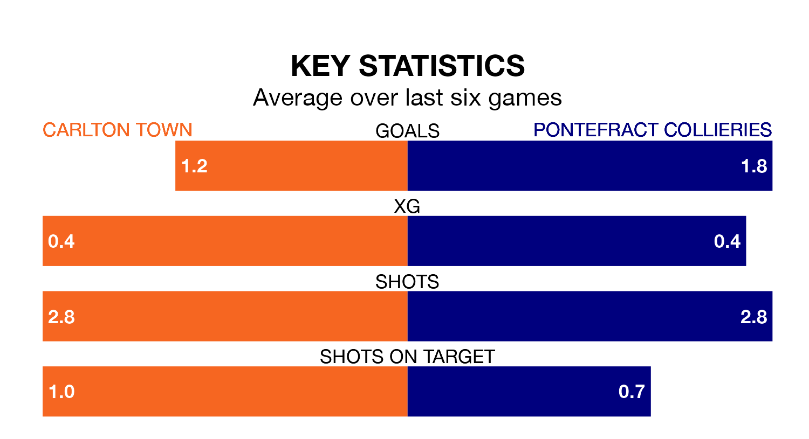

Pontefract Collieries travel to Carlton Town on Saturday in the Northern Premier League Division One East.
The visitors come into the game on the back of a defeat in their last match, having lost to Consett 2-0 at home.
Carlton also lost their last match, 3-0 against Newton Aycliffe.
With 29 goals in 15 games so far this season, Pontefract Collieries are scoring more than average in the league with 1.9 goals per game. And they are conceding fewer than average, letting in 19 goals at a rate of 1.3 per game.
Carlton, meanwhile, are below average scorers, with 1.4 goals per game, compared to a league average of 1.6. They have conceded 1.2 goals per game.
Town are fifth in the table after 16 games, of which they have won 10 and lost six, earning 30 points.
The visitors are two places behind the home side in seventh, with eight wins and three draws putting them on 27 points.
Carlton are in mixed form in the Northern Premier League Division One East, with three wins and three losses from their last six games.
With three wins and a draw over that period, Pontefract Collieries' form is slightly better – they have taken 10 points from 18, compared to Carlton's nine.
Updated: 12:43, 20/12/23